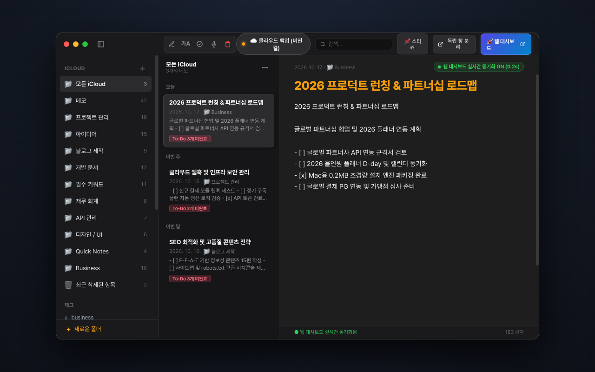
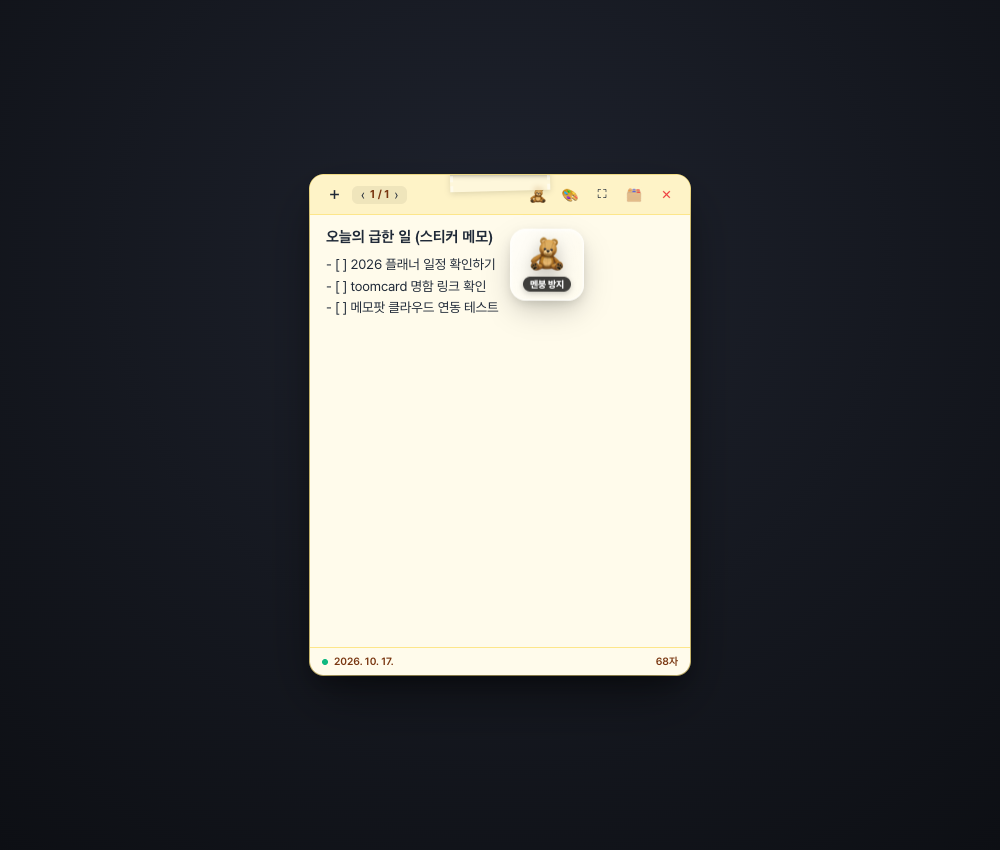
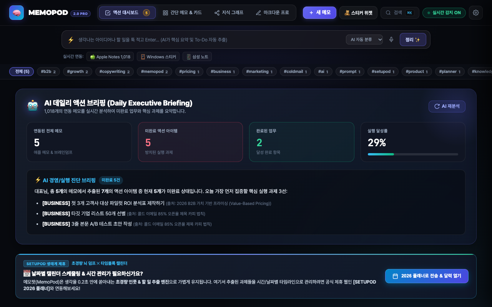

✨ 2-Tier 지식 OS 공식 매뉴얼
생각은 가볍게 끄적이고,
정리는 AI 지식 뇌가 알아서 싹!
0.2MB 초경량 메모 앱과 3D 스티커 메모 위젯, 그리고 강력한 AI 웹 지휘소가 결합된 MemoPod 2.0의 모든 기능을 알기 쉽게 정리한 사용자 설명서입니다.
1
초경량 0.2MB
빠른 시작 및 설치 가이드
무거운 일렉트론(Electron) 앱 대신 순수 네이티브 경량 아키텍처로 제작되어 0.1초 만에 즉시 구동됩니다.
Mac 최초 실행 팁: 애플 미인증 개발자 팝업이 뜨는 경우, 앱 아이콘을 우클릭(또는 Control + 클릭) 후 [열기]를 누르면 1초 만에 실행되며 다음부터는 더블 클릭만으로 바로 열립니다.
2
3-Pane Layout
3단 퀵노트 (Apple Notes Pro)
애플 순정 메모장의 정갈한 감성에 지식 관리 엔진을 더해, 복잡한 설정 없이 직관적으로 작성합니다.

📁 폴더 트리 분류
업무, 프로젝트, 아이디어 등 원하는 폴더를 무제한 생성하고 드래그하여 정리할 수 있습니다.
🔍 실시간 초성 검색
검색창에서 수천 개의 메모를 타이핑과 동시에 초성 및 본문 키워드로 즉시 검색합니다.
✅ To-Do 자동 추출 배지
- [ ] 체크리스트 작성 시 메모 목록에 To-Do 미완료 배지가 자동으로 감지됩니다.
3
아날로그 감성 3D
3D 스티커 메모 위젯 (Sticky Note)
모니터 한 켠에 띄워두고 급한 일정과 메모를 실제 포스트잇처럼 직관적으로 다루는 위젯 모드입니다.

🩹 반투명 스카치 테이프 효과
실제 책상 위에 테이프로 붙여둔 듯한 자연스러운 텍스처와 부드러운 드롭섀도우를 제공합니다.
🧸 입체 3D 틸트 스티커
상단 팔레트에서 곰인형, 별, 핀, 로켓 등 스티커를 부착하면 마우스 방향에 맞춰 3D로 기울어집니다.
⛶ 위젯 / 전체화면 원클릭 전환
상단 ⛶ 버튼으로 380x500 컴팩트 포스트잇 크기와 넓은 전체화면을 0.1초 만에 전환합니다.
4
Apple-Grade Clean
AI 웹 지휘소 & 데일리 브리핑
여기저기 흩어진 생각들을 AI가 분석하여 오늘 당장 실행해야 할 핵심 과제와 달성률을 브리핑합니다.

🤖 AI 데일리 액션 브리핑
수많은 메모 속에서 방치된 미완료 할 일들을 종합 분석하여 '오늘 가장 먼저 집중할 핵심 과제 3선'을 요약합니다.
⚡ 스포트라이트 퀵 캡처
레이캐스트처럼 우아한 1줄 입력창에 아이디어를 툭 적고 Enter만 치면 카테고리 태깅과 To-Do가 자동 완성됩니다.
🌌 3차원 지식 그래프
상단 [지식 그래프] 탭을 누르면 모든 생각과 키워드가 성단처럼 얽힌 3D 우주 맵으로 펼쳐집니다.
5
Supabase Dual-Sync
크로스 디바이스 클라우드 동기화
Mac, Windows, 아이폰, 아이패드 어디서 기록하든 클라우드를 통해 실시간으로 모든 메모가 동기화됩니다.
☁️ 원클릭 간편 로그인
상단 구름 아이콘 클릭 후 대한민국 친화적인 카카오 로그인 또는 Google 로그인을 선택합니다.
🔒 2중 안전 백업
로컬 스토리지 + Supabase 클라우드 데이터베이스 2중 보관으로 기기를 변경해도 데이터 유실이 없습니다.
📱 모바일 홈 화면 추가
아이폰 사파리에서 접속 후 [공유] ➔ [홈 화면에 추가]를 누르면 네이티브 앱처럼 전체화면으로 사용 가능합니다.